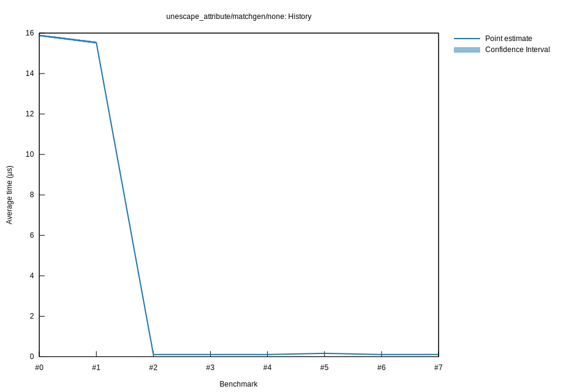

# 42025-10-29T22:29:47-07:00
|
Lower Bound |
Estimate |
Upper Bound |
| Value: |
0.11µs |
0.11µs |
0.11µs |
| Throughput: |
150084.41MiB/s |
149551.42MiB/s |
148992.26MiB/s |
| Change in Value: |
-1.9590% |
-0.8462% |
-0.0534% |
| Change in Throughput: |
+1.9982% |
+0.8534% |
+0.0534% |
Change within noise threshold.
# 32025-10-29T22:23:12-07:00
|
Lower Bound |
Estimate |
Upper Bound |
| Value: |
0.11µs |
0.11µs |
0.11µs |
| Throughput: |
149119.83MiB/s |
148377.86MiB/s |
147590.02MiB/s |
| Change in Value: |
-0.8588% |
-0.0297% |
+0.9292% |
| Change in Throughput: |
+0.8663% |
+0.0297% |
-0.9206% |
Change within noise threshold.
# 22025-10-29T19:47:35-07:00
|
Lower Bound |
Estimate |
Upper Bound |
| Value: |
0.11µs |
0.11µs |
0.11µs |
| Throughput: |
148907.29MiB/s |
148328.00MiB/s |
147721.47MiB/s |
| Change in Value: |
-99.308% |
-99.300% |
-99.294% |
| Change in Throughput: |
+14355% |
+14185% |
+14059% |
No change in performance detected.
# 12025-10-29T19:04:25-07:00
|
Lower Bound |
Estimate |
Upper Bound |
| Value: |
15.48µs |
15.53µs |
15.59µs |
| Throughput: |
1041.20MiB/s |
1037.65MiB/s |
1033.78MiB/s |
| Change in Value: |
-3.5105% |
-2.1656% |
-0.7204% |
| Change in Throughput: |
+3.6382% |
+2.2135% |
+0.7257% |
No change in performance detected.
# 02025-10-26T16:48:39-07:00
|
Lower Bound |
Estimate |
Upper Bound |
| Value: |
15.83µs |
15.88µs |
15.93µs |
| Throughput: |
1017.59MiB/s |
1014.61MiB/s |
1011.42MiB/s |